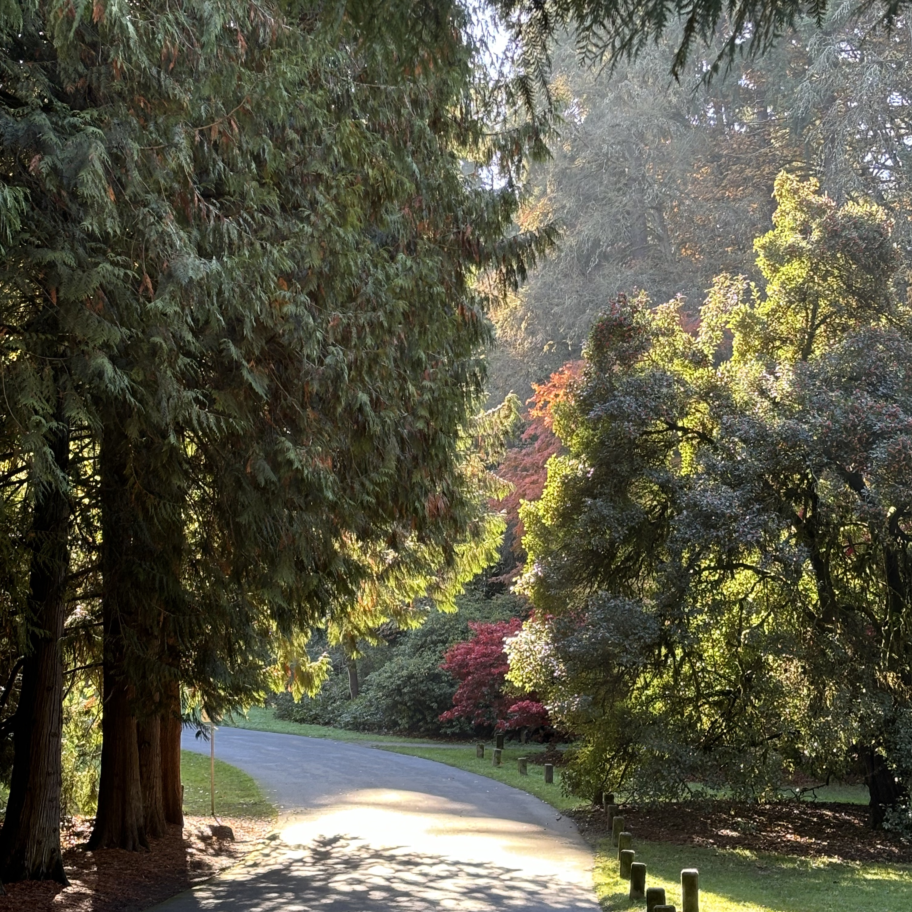

software development engineer ii
Amazon Web Services, S3
may 2022 - present
software development engineer i
Amazon Web Services, S3
july 2020 - may 2022
software development intern
Milliman
february 2020 - july 2020
backend
java, ruby, yaml, dynamodb, amazon s3, systems design, api development, database schema design, caching strategies
competencies
version control, agile/scrum, continuous integration, debugging, object oriented programming, testing, automation, scripting and automation tools
certificate in software development
Ada Developers Academy, 2020
software development bootcamp for women and gender expansive people
bachelor of arts, cum laude
Pomona College, 2017
toni clark president's prize in gender and women's studies
spectrum (itch.io)
2019
soothing color gradient game, unity game engine. each puzzle board is unique: polygons are created using voronoi diagram partitioning
